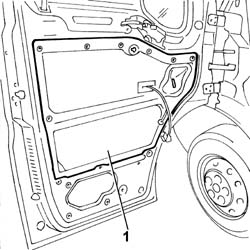
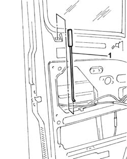
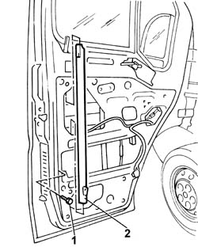
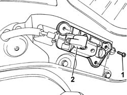
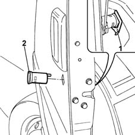
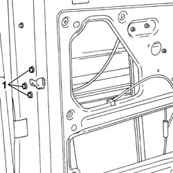
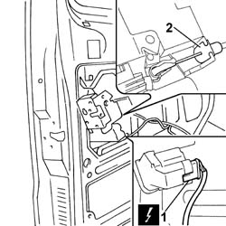

7005N20 FRONT SIDE DOOR LOCK MOTOR/CATCH ASSEMBLY - RR WITH DOOR PANEL AND SUPPORT FRAME REMOVED
- Path
- Procedures > 70 FITTINGS > 7005 PASSENGER COMPARTMENT FRONT SIDE DOORS > 7005N FRONT DOOR CENTRAL LOCKING SYSTEM > 7005N20 FRONT SIDE DOOR LOCK MOTOR/CATCH ASSEMBLY - RR WITH DOOR PANEL AND SUPPORT FRAME REMOVED
- Kind
- repair procedure (removal / refitting; the operation number is the code)
- Applies to
- all engines; all production periods
- Interactive page
- https://sloeber94.github.io/elrnDB-fDct/en/#/244001453
Applies to: all engines; all production periods
 Removing
Removing
 Refitting
Refitting1. Remove the water shield.

Applies to: all engines; all production periods
- Release the safety rod from the lock.
1. Remove the front side door safety device rod.

Applies to: all engines; all production periods
1. Undo the bolt fixing the descending window glass guide.
2. Remove the guide.

Applies to: all engines; all production periods
1. Undo the bolts fixing the door inner opening idler.
- Disconnect the flexible cable from the device.
2. Remove the inner door opening idler.
- Release the flexible cable from the door opening idler device mounting bracket.
- Release the flexible cable from the door frame.

Applies to: all engines; all production periods
1. Remove the lock fastening spring.
2. Remove the lock.

Applies to: all engines; all production periods
1. Undo the bolts fixing the lock.

Applies to: all engines; all production periods
- Release the lock from the door frame.
1. Disconnect the electrical connector for the lock.
 | Description | Connector |
|---|---|---|
1 | Left front door lock geared motor | N050 |
| Description | Connector |
|---|---|---|
1 | Right front door lock geared motor | N051 |
2. Disconnect the flexible cable from the lock.

Applies to: all engines; all production periods
Refitting
Removing- Connect the flexible cable to the lock.
- Connect the electrical connector for the lock.
| Description | Connector |
|---|---|---|
. | Left front door lock geared motor | N050 |
| Description | Connector |
|---|---|---|
. | Right front door lock geared motor | N051 |
- Insert the lock in the special housing in the door frame.
- Fasten the lock to the door frame tightening the fixing bolts to the recommended torque.
 | Value - daNm | Fastening | Component | Ø |
|---|---|---|---|---|
. | 1,5 | Bolt | FRONT DOOR LOCK MECHANISM | M8 |
- Insert the lock barrel in the special housing in the door and in the lock.
- Secure the lock barrel to the door frame using the fastening spring.
- Fit the flexible cable inside the door frame.
- Secure the flexible cable to the door opening idler device mounting bracket.
- Secure the flexible cable to the door opening idler.
- Fit the door opening idler device to the door tightening the fixing bolts.
- Position the guide in the housing and secure it to the door frame tightening the fixing bolts.
- Insert the safety rod in the special housing and connect it to the door lock.
- Clean the area where the water shield is fastened to the door frame to remove any residues and ensure that the shield sticks properly.
- Fasten a new water shield to the door frame.